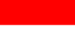
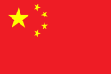
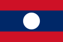
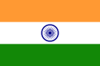
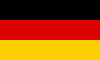
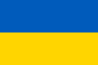

Indonesia
Jepang

China
Laos
Pakistan

India
Inggris
Jerman
Italia

`
Indonesia |
|
|---|---|
|  | Indonesia, disebut juga dengan Negara Kesatuan Republik Indonesia (NKRI, pengucapan bahasa Indonesia: [nəˈɡara kəsaˈt̪ua̯n reˈpublɪk in.ˈdo.nɛ.sja]); atau hanya Republik Indonesia (RI) adalah negara di Asia Tenggara yang dilintasi garis khatulistiwa dan berada di antara daratan benua Asia dan Australia, serta antara Samudra Pasifik dan Samudra Hindia. Indonesia adalah negara kepulauan terbesar di dunia yang terdiri dari 17.504 pulau. Nama alternatif yang biasa dipakai adalah Nusantara.[15] Dengan populasi mencapai 270.203.917 jiwa pada tahun 2020,[16] Indonesia menjadi negara berpenduduk terbesar keempat di dunia dan negara berpenduduk Muslim terbesar di dunia, dengan penganut lebih dari 230 juta jiwa. |
Jepang |
|
|
|
Jepang (Jepang: 日本 Nippon atau Nihon; nama resmi: 日本国 Tentang suara ini Nipponkoku atau Nihonkoku, nama harfiah: "Negara Jepang") adalah sebuah negara kepulauan di Asia Timur. Letaknya di ujung barat Samudra Pasifik, di sebelah timur Laut Jepang, dan bertetangga dengan Republik Rakyat Tiongkok, Korea Selatan, dan Rusia. Pulau-pulau paling utara berada di Laut Okhotsk, dan wilayah paling selatan berupa kelompok pulau-pulau kecil di Laut Tiongkok Timur, tepatnya di sebelah selatan Okinawa yang bertetangga dengan Taiwan (Republik Tiongkok). |
China |
|
|  | Tiongkok, atau nama lengkapnya Republik Rakyat Tiongkok atau Republik Rakyat Cina (Hanzi sederhana: 中华人民共和国; Hanzi tradisional: 中華人民共和國; Pinyin: Zhōnghuá Rénmín Gònghéguó; harfiah: 'Republik Rakyat Tionghoa', disingkat RRT, RRC) adalah sebuah negara yang terletak di Asia Timur yang beribu kota di Beijing[18] Negara ini memiliki jumlah penduduk terbanyak di dunia (sekitar 1,4 miliar jiwa, mayoritas merupakan suku Han) dan luas daratan 9,59 juta kilometer persegi, menjadikannya negara ke-3 terbesar di dunia.[19] Negara ini didirikan pada tahun 1949 setelah berakhirnya Perang Saudara Tiongkok, dan sejak saat itu dipimpin oleh sebuah partai tunggal, yaitu Partai Komunis Tiongkok (PKT).[20] Sekalipun sering kali dilihat sebagai negara komunis, kebanyakan ekonomi republik ini telah diswastakan sejak tahun 1980-an. Walau bagaimanapun, pemerintah masih mengawasi ekonominya secara politik terutama dengan perusahaan-perusahaan milik pemerintah dan sektor perbankan. Secara politik, ia masih tetap menjadi pemerintahan satu partai. |
Laos |
|
|  | Laos (bahasa Laos: ລາວ, Lāo [láːw]), secara resmi Republik Demokratik Rakyat Laos (bahasa Laos: ສາທາລະນະລັດ ປະຊາທິປະໄຕ ປະຊາຊົນລາວ), adalah sebuah negara yang terkurung daratan di Asia Tenggara, yang berbatasan dengan Myanmar dan Republik Rakyat Tiongkok di sebelah barat laut, Vietnam di timur, Kamboja di selatan, dan Thailand di sebelah barat. Dari abad ke-14 hingga abad ke-18, negara ini disebut Lan Xang atau "Negeri Seribu Gajah" |
Pakistan |
|
|
|
Pakistan (/pækstæn/ ( simak) atau /pɑːkiˈstɑːn/ ( simak); bahasa Urdu: پاکِستان) (pengucapan bahasa Urdu: [paːkɪˈst̪aːn] ( simak)), secara resmi bernama Republik Islam Pakistan (bahasa Urdu: اسلامی جمہوریۂ پاکِستان) adalah sebuah negara di Asia Selatan. Negara ini memiliki garis pantai sepanjang 1046-kilometer (650 mi) dengan Laut Arab dan Teluk Oman di bagian selatan, berbatasan dengan negara Afghanistan dan Iran di bagian barat, India di bagian timur dan Tiongkok di arah timur laut.[5] Tajikistan terletak sangat berdekatan dengan Pakistan, namun dibatasi oleh daratan sempit yang disebut Koridor Wakhan. Pakistan terletak secara strategis di antara daerah-daerah penting di Asia Selatan, Asia Tengah, dan Timur Tengah. |
India |
|
|  | India (Hindi: भारत Bhaarat) atau इंडिया (Īndiyaa), dengan nama resmi Republik India (Hindi: भारत गणराज्य; pengucapan bahasa Hindi: [bʱɑː.ɾət̪ ɡəɳ.ɾɑːd͡ʒ.jᵊ], diromanisasikan menjadi Bhārat Gaṇarājya[5] adalah sebuah negara di Asia dengan jumlah penduduk terbanyak kedua di dunia, dengan populasi lebih dari satu miliar jiwa, dan adalah negara terbesar ketujuh berdasarkan ukuran wilayah geografis. Jumlah penduduk India tumbuh pesat sejak pertengahan 1980-an. Ekonomi India adalah terbesar ketiga di dunia dalam PDB, diukur dari segi paritas daya beli (PPP), dan salah satu pertumbuhan ekonomi tercepat di dunia. India, negara dengan sistem demokrasi liberal terbesar di dunia, juga telah muncul sebagai kekuatan regional yang penting, memiliki kekuatan militer terbesar, dan memiliki kemampuan senjata nuklir. |
Inggris |
|
| Inggris (bahasa Inggris: England) adalah sebuah negara konstituen yang merupakan bagian dari Britania Raya.[6][7][8] Negara ini berbatasan dengan Skotlandia di sebelah utara dan Wales di sebelah barat, Laut Irlandia di barat laut, Laut Keltik di barat daya, serta Laut Utara di sebelah timur dan Selat Inggris, yang memisahkannya dari benua Eropa, di sebelah selatan. Sebagian besar wilayah Inggris terdiri dari bagian tengah dan selatan Pulau Britania Raya di Atlantik Utara. Inggris juga mencakup lebih dari 100 pulau kecil seperti Isles of Scilly dan Isle of Wight. | |
Jerman |
|
|  | Jerman (bahasa Jerman: Deutschland, diucapkan [ˈdɔʏtʃlant] ( simak)), secara resmi disebut sebagai Republik Federal Jerman (bahasa Jerman: Bundesrepublik Deutschland) adalah negara berbentuk federasi di Eropa Barat. Negara ini memiliki posisi ekonomi dan politik yang sangat penting di Eropa maupun di dunia. Dengan luas 357.021 kilometer persegi dan jumlah penduduk sekitar 82 juta jiwa, negara dengan 16 negara bagian (Bundesland, jamak: Bundesländer) ini menjadi anggota kunci organisasi Uni Eropa (penduduk terbanyak), penghubung transportasi barang dan jasa antarnegara sekawasan, serta menjadi negara dengan penduduk imigran ketiga terbesar di dunia. |
Italia |
|
|
|
Italia (Tentang suara ini Italia (bantuan·info)), resminya Republik Italia (bahasa Italia: Repubblica Italiana),[7][8][9][10] adalah sebuah negara kesatuan republik parlementer di Eropa[catatan 1] Terletak di jantung Laut Mediterania. Italia berbatasan dengan Prancis, Swiss, Austria, Slovenia, San Marino dan Vatikan. Italia mencakup area seluas 301.338 km² (116.347 mi²), dan dipengaruhi oleh iklim sedang dan iklim mediterania. Dilihat dari bentuknya, peta Italia berbentuk seperti sepatu bot atau di Italia sering disebut lo Stivale.[11][12] Dengan jumlah penduduk mencapai 61 juta jiwa, Italia merupakan negara anggota Uni Eropa ketiga yang paling banyak penduduknya setelah Jerman dan Prancis. |
Ukraina |
|
|  | Ukraina (bahasa Ukraina: Укpaïнa, Rusia: Укpaинa) adalah sebuah negara di Eropa Timur[4][5][6][7] yang berbatasan dengan Rusia di timur dan timur-laut; Belarus di barat-laut; Polandia dan Slowakia di barat; Hongaria, Rumania, dan Moldova di barat-daya; Laut Hitam di selatan; dan Laut Azov di tenggara. Ukraina dan Rusia sekarang ini sama-sama memperebutkan Semenanjung Krimea yang dicaplok oleh Rusia pada tahun 2014, meskipun demikian Ukraina dan banyak komunitas internasional mengakuinya sebagai bagian dari Ukraina. Beserta Krimea, Ukraina memiliki wilayah seluas 603.628 km², yang membuatnya sebagai negara terluas di Eropa dan terluas ke-46 di dunia. Sedangkan populasi sejumlah 44,5 juta jiwa menjadikan Ukraina sebagai negara berpenduduk terbanyak ke-32 di dunia. |